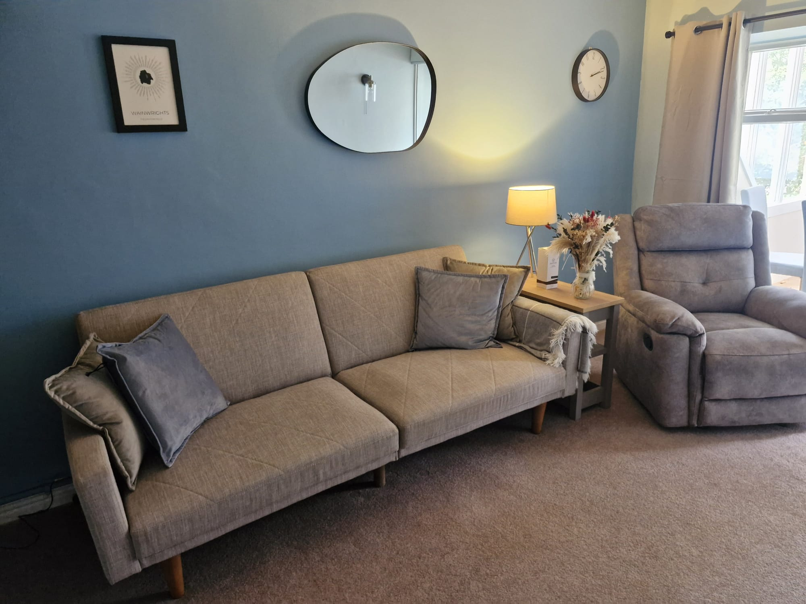
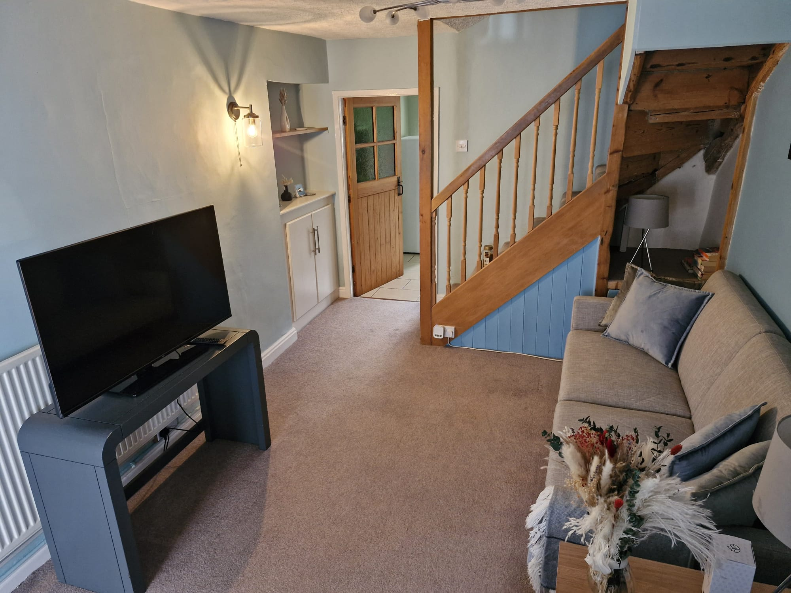
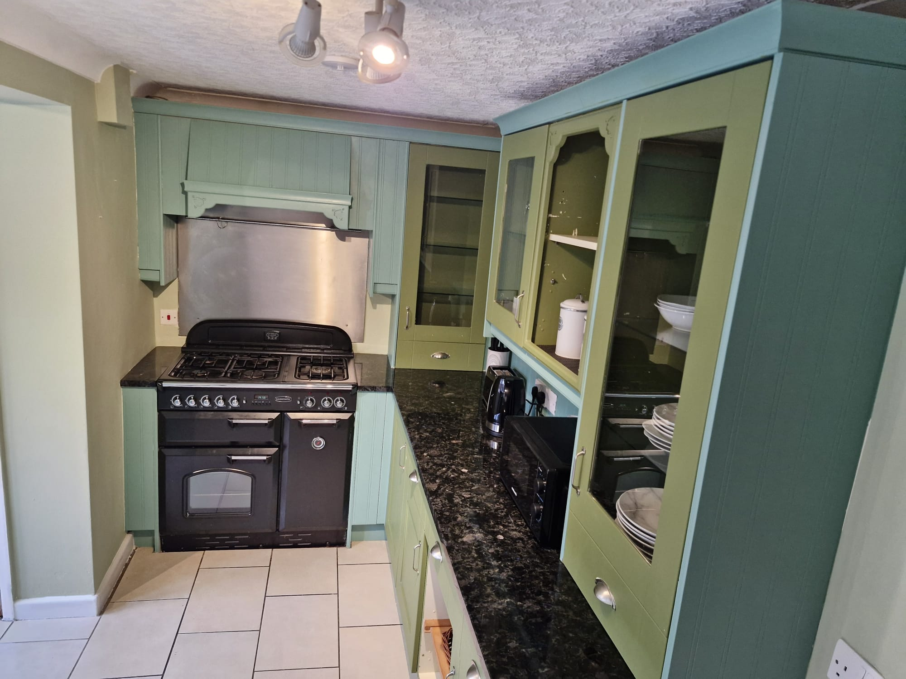
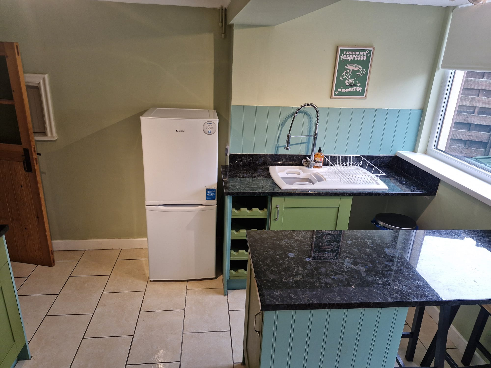
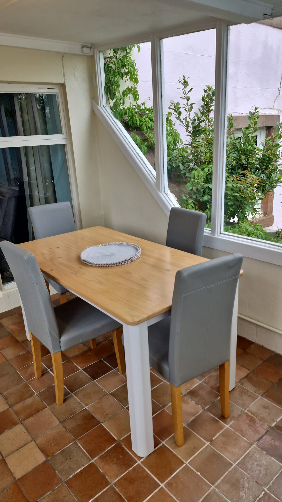
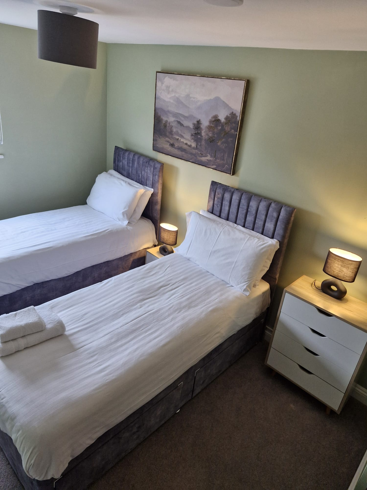
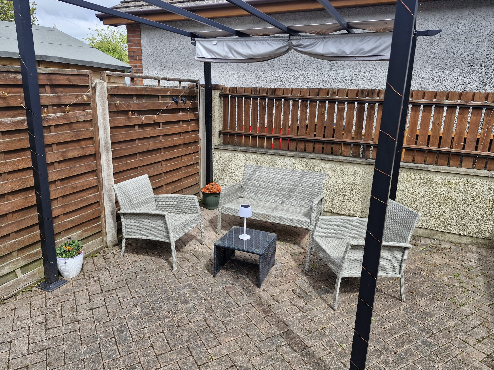
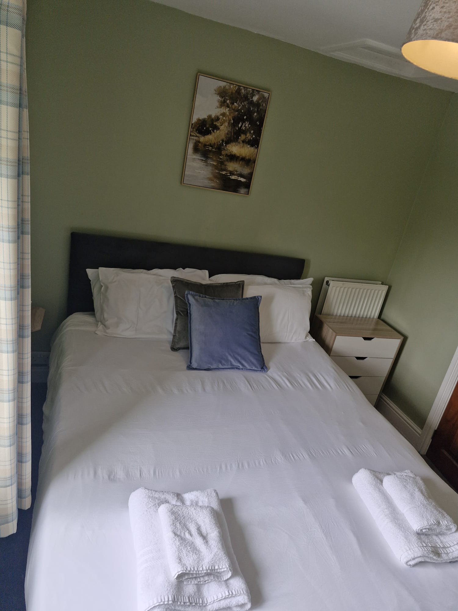

Chapel Cotttage is 2 miles from Penrith and junction 40, 2 miles from Lowther Castle and 5 miles from Pooley Bridge, so perfect for an overnight break from a journey, a week's holiday enjoying the delights of the Lake District or anything in between. It has a double bedroom with king-size bed and another with zip-link beds offering twins or a king-size. The bathroom has a shower. There's a kitchen with breakfast bar, dining room and lounge. Please be aware that the house is on the A6 and although it's in a small village, there will be traffic noise in the house. Up to date availability can be found on the calendar on the Airbnb website, linked to below. I can offer you a better price if you then contact me directly to book.